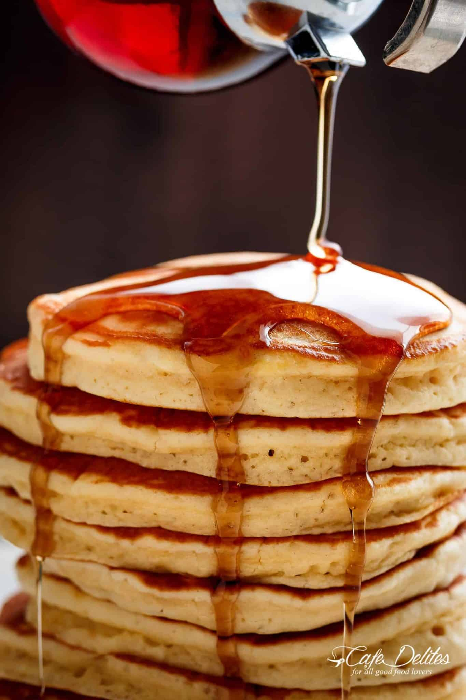

The Fluffiest Pancakes Ever!

Description
These pancakes are super soft and fluffy; each mouthful melting
in your mouth! The key is to have the perfect batter - thick but
able to run slowly off the spoon.
Ingredients
- 2 cups of all purpose flour
- 1/4 cup granulated sugar or sweetener
- 4 teaspoons of baking powder
- 1/4 teaspoon baking soda
- 1/2 teaspoon salt
- 1 3/4 cups milk
- 1/4 cup butter
- 2 teaspoons pure vanilla extract
- 1 large egg
Steps
- Combine the flour, sugar, baking powder, baking soda
and salt in a large bowl. Make a well in the center and add milk,
slightly cooled melted butter, vanilla and egg.
- Use a wire whisk to whisk the wet ingredients first before
slowly folding them into the dry ingredients. Mix together until
smooth.
- Set batter aside and allow to rest while heating up the pan or griddle.
- Heat a nonstick pan or griddle over low-medium heat and wipe
over with a little butter to lightly grease the pan. Pour 1/4 cup
of batter onto the pan and spread out gently into a round shape with the back of
ladle or measuring cup.
- When the underside is golden and bubbles begin to appear on the surface,
flip with a spatula and cook until golden. Repeat with remaining batter.
- Serve with honey, maple syrup, fruit, yogurt, or enjoy plain!